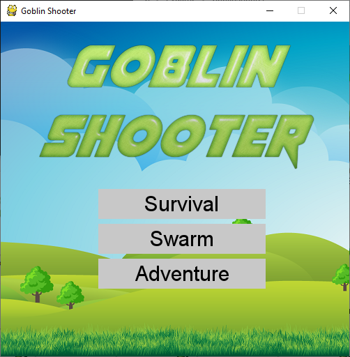
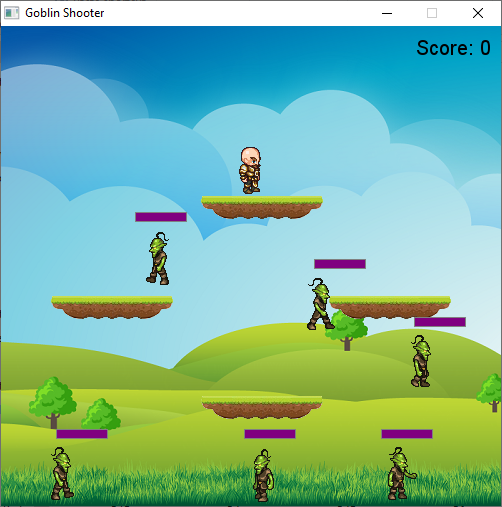
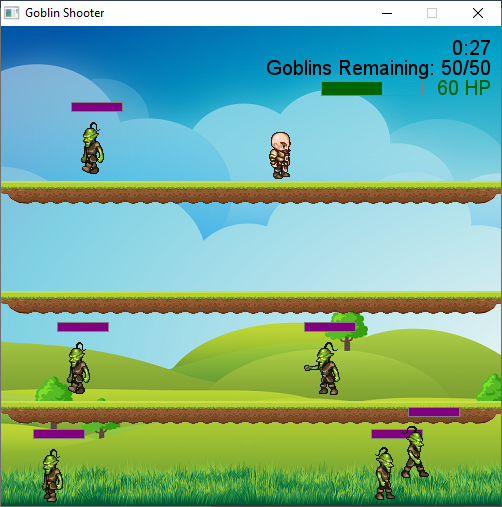
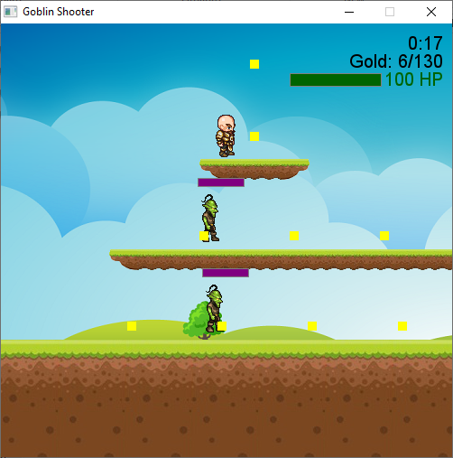
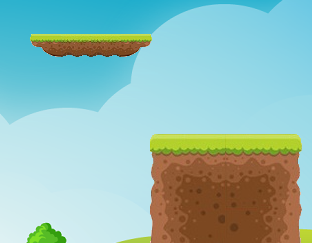

Goblin Shooter
This is a simple 2D platforming and shooting game created using Python with the Pygame library. The player character is moved using WSAD or arrow keys on the keyboard. W or up arrow is for jumping, S or down arrow is for passing down through platforms. Bullets are fired using the space bar or Enter key The enemies are goblins. They walk back and forth between their range and randomly change directions, jump and pass down through platforms. Contact with goblins will damage the player. Goblins are eliminated after they are shot four times. 1 second of invincibility is given to the player after losing HP or when a goblin spawns.
Survival
In Survival mode, the player will die after one contact with a goblin. Each shot that hits a goblin scores 1 point. The spawn rate of the goblins increases depending on the score, with a maximum rate of a spawn every 2 seconds at 60 points. There will be 6 or fewer goblins on the screen at a time. Kill as many goblins as possible until
Swarm
In Swarm mode, each contact with a goblin deals 10 damage to the player. Goblins spawn every 3 seconds, with a limit of 6 goblins on the screen at once. Defeat 50 goblins to win. A timer keeps track of how long you took to finish.
Adventure
The Adventure mode is a side scrolling platformer. The player needs to navigate the level, collect all gold pieces and kill all goblins before reaching a wooden sign post to win. Goblins drop a gold piece when they die. There is a timer to keep track of how long you took to finish the level. Each contact with a goblin deals 15 damage. Falling off the screen will instantly kill the player.
Platforms
On the top left of the image is a platform. You can jump from underneath it. You can also pass down through the platform by pressing down arrow or S while standing or walking. On the bottom right is a cliff. You can walk through the brown area and jump up from underneath onto the green surface, but you cannot pass down through it.
DOWNLOAD EXE
SOURCE CODE
Instructions for Windows
- Click on the DOWNLOAD EXE button and wait for the download to begin
- Save Goblin Shooter.zip to your computer
- Right click the file and select "Extract all..." to extract the files
- Open Goblin Shooter.exe
Instructions for Linux
- Click on the SOURCE CODE button to see the GitHub page
- Clone the repository or download a zip
- Make sure to have Pygame installed using pip
- Execute Game.py